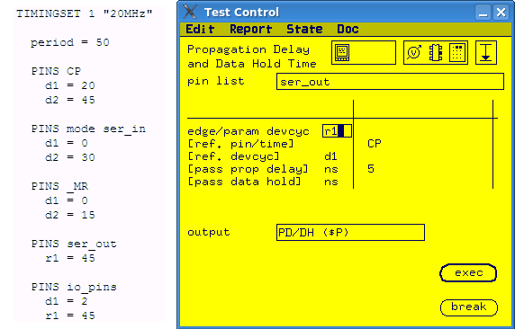

Propagation Delay conversion
The Propagation Delay test can be pass/fail test or value test.
About this task
For pass/fail test, you can convert it to an
ac_tml.AcTest.functionalTest test method by setting the measured edge to
reference time plus pass propagation delay.
For value test, you can convert it to an
ac_tml.AcTest.parametricFunctionalTest. Firstly, you need to define a timing
spec to control the measured receive edge. Then in
ac_tml.AcTest.parametricFunctionalTest, you can use it as the parameter to
shift.
The Propagation Delay tries to find the maximum time delay between a change in the device input and the corresponding change at the device output to its new final state. It varies the position of the receive edge to find the pass/fail or fail/pass transition of the functional test. The definition of propagation delay and output data hold time are shown in the figure below:

Procedure
Example
The following example shows how to convert a propagation delay test to the
ac_tml.AcTest.parametricFunctionalTest. The timing set used in the example is
listed on the left side.

In the example, the propagation delay is measured for edge r1 of pin group ser_out. The reference time is edge d1 of pin CP. If the measured propagation delay is less than 5 ns, the measurement is pass.
To convert the propagation delay to
ac_tml.AcTest.parametricFunctionalTest, you need to:
- Define a timing spec prop_delay to control the receive
edge:
PINS ser_out r1 = prop_delay + 20
- Edge compare is used in this example. The left boundary of receive edge is nominal setting
for r1 minus one period. The right boundary is nominal setting for r1 plus one period.

Start position is 45 ns. period is 50 ns. The left boundary of r1 is start - period = -5 ns. The right boundary of r1 is start + period = 95 ns.
prop_delay = r1 -20. So the search range of prop_delay is from -25 ns to 75 ns.
- Enter the parameter values for ac_tml.AcTest.parametricFunctionalTest.
spec
prop_delay
resultPinList
ser_out
resultPinListMode
parallel
setupPinList
ser_out
setupPinListMode
parallel
method
lin/bin
start
-25
stop
75
step
resolution
passMin
passMax
5
Functional changes
- Introduced before SmarTest 6.3.2